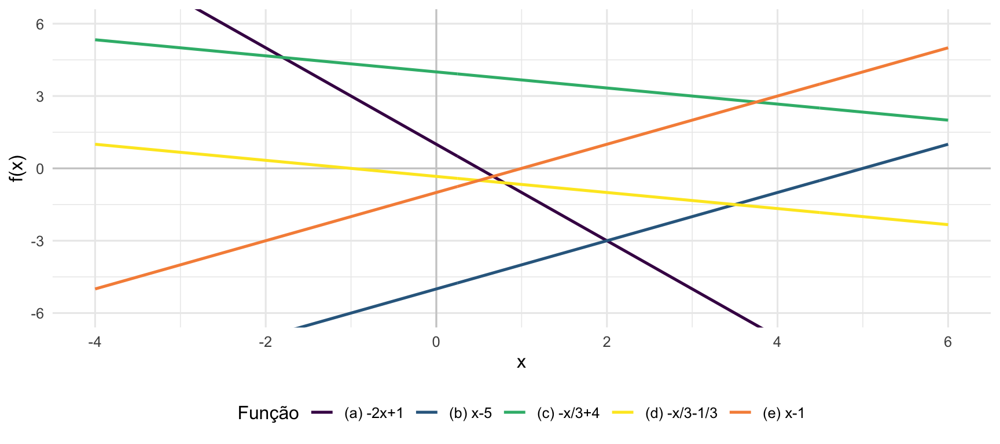

library(ggplot2)
library(patchwork)
x <- seq(-4, 6, length.out = 300)
df <- data.frame(
x = x,
fa = -2*x + 1,
fb = x - 5,
fc = -x/3 + 4,
fd = -x/3 - 1/3,
fe = x - 1
)
cores <- c("(a) -2x+1"="#440154","(b) x-5"="#31688e",
"(c) -x/3+4"="#35b779","(d) -x/3-1/3"="#fde725","(e) x-1"="#f68f46")
p <- ggplot(df, aes(x = x)) +
geom_hline(yintercept = 0, color = "gray80") +
geom_vline(xintercept = 0, color = "gray80") +
geom_line(aes(y = fa, color = "(a) -2x+1"), linewidth = 0.9) +
geom_line(aes(y = fb, color = "(b) x-5"), linewidth = 0.9) +
geom_line(aes(y = fc, color = "(c) -x/3+4"), linewidth = 0.9) +
geom_line(aes(y = fd, color = "(d) -x/3-1/3"), linewidth = 0.9) +
geom_line(aes(y = fe, color = "(e) x-1"), linewidth = 0.9) +
coord_cartesian(ylim = c(-6, 6)) +
scale_color_manual(values = cores) +
labs(x = "x", y = "f(x)", color = "Função") +
theme_minimal(base_size = 12) +
theme(legend.position = "bottom")
p